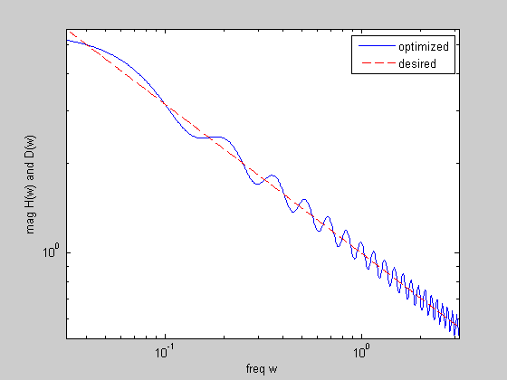

Design a 1/f spectrum shaping (pink-noise) filter
n = 40;
m = 15*n;
wa = 0.01*pi; wb = pi;
wl = logspace(log10(wa),log10(wb),m)';
D = 1./sqrt(wl);
Al = [ones(m,1) 2*cos(kron(wl,[1:n-1]))];
cvx_begin
variable r(n,1)
variable R(m,1)
minimize( max( max( [R./(D.^2) (D.^2).*inv_pos(R)]' ) ) )
subject to
R == Al*r;
cvx_end
disp(['Problem is ' cvx_status])
if ~strfind(cvx_status,'Solved')
return
end
h = spectral_fact(r);
figure(1)
H = exp(-j*kron(wl,[0:n-1]))*h;
loglog(wl,abs(H),wl,D,'r--')
set(gca,'XLim',[wa pi])
xlabel('freq w')
ylabel('mag H(w) and D(w)')
legend('optimized','desired')
Calling SDPT3: 3000 variables, 641 equality constraints
For improved efficiency, SDPT3 is solving the dual problem.
------------------------------------------------------------
num. of constraints = 641
dim. of sdp var = 1200, num. of sdp blk = 600
dim. of linear var = 600
dim. of free var = 600 *** convert ublk to lblk
*******************************************************************
SDPT3: Infeasible path-following algorithms
*******************************************************************
version predcorr gam expon scale_data
HKM 1 0.000 1 0
it pstep dstep pinfeas dinfeas gap mean(obj) cputime
-------------------------------------------------------------------
0|0.000|0.000|7.8e+03|6.1e+01|5.4e+06| 0.000000e+00| 0:0:00| spchol 1 1
1|0.022|0.178|7.6e+03|5.1e+01|1.8e+06|-2.773746e+01| 0:0:01| spchol 1 1
2|0.915|0.966|6.5e+02|1.8e+00|8.9e+04|-5.283716e+01| 0:0:01| spchol 1 1
3|0.986|0.979|9.1e+00|4.5e-02|1.3e+03|-4.650149e+01| 0:0:01| spchol 2 2
4|0.993|0.998|6.4e-02|9.8e-04|8.5e+01|-3.915471e+01| 0:0:02| spchol 2 2
5|1.000|0.957|3.3e-04|1.3e-02|4.2e+00|-2.095337e+00| 0:0:02| spchol 1 2
6|0.361|0.924|2.1e-04|1.1e-03|2.2e+00|-1.519518e+00| 0:0:03| spchol 2 2
7|1.000|0.233|9.0e-06|8.6e-04|1.4e+00|-1.608899e+00| 0:0:03| spchol 2 2
8|1.000|0.453|1.5e-05|4.7e-04|7.9e-01|-1.373633e+00| 0:0:03| spchol 2 2
9|1.000|0.219|2.8e-06|3.7e-04|6.5e-01|-1.313597e+00| 0:0:04| spchol 2 2
10|1.000|0.270|1.2e-06|2.7e-04|5.0e-01|-1.264834e+00| 0:0:04| spchol 2 2
11|1.000|0.318|3.0e-07|1.9e-04|3.5e-01|-1.232707e+00| 0:0:05| spchol 2 1
12|1.000|0.351|4.4e-08|1.2e-04|2.3e-01|-1.215121e+00| 0:0:05| spchol 2 2
13|1.000|0.407|5.5e-09|6.6e-05|1.2e-01|-1.203334e+00| 0:0:06| spchol 2 2
14|1.000|0.818|6.3e-09|2.3e-05|3.1e-02|-1.179959e+00| 0:0:06| spchol 2 2
15|0.789|0.831|3.1e-09|5.3e-06|1.3e-02|-1.182598e+00| 0:0:06| spchol 2 2
16|0.817|0.900|5.2e-10|2.1e-06|4.1e-03|-1.185630e+00| 0:0:07| spchol 2 2
17|0.856|0.809|1.1e-10|6.6e-07|8.1e-04|-1.186983e+00| 0:0:07| spchol 1 1
18|0.904|0.891|1.7e-11|1.3e-07|1.1e-04|-1.187284e+00| 0:0:08| spchol 1 1
19|0.974|0.964|7.3e-12|1.8e-08|5.6e-06|-1.187329e+00| 0:0:08| spchol 1 1
20|0.994|0.988|1.0e-12|9.0e-10|1.2e-07|-1.187331e+00| 0:0:08| spchol 1 1
21|1.000|0.986|2.7e-13|2.0e-11|3.2e-09|-1.187331e+00| 0:0:09|
stop: max(relative gap, infeasibilities) < 1.49e-08
-------------------------------------------------------------------
number of iterations = 21
primal objective value = -1.18733108e+00
dual objective value = -1.18733108e+00
gap := trace(XZ) = 3.17e-09
relative gap = 9.39e-10
actual relative gap = 9.30e-10
rel. primal infeas = 2.67e-13
rel. dual infeas = 1.95e-11
norm(X), norm(y), norm(Z) = 1.2e+01, 2.6e+02, 2.7e+02
norm(A), norm(b), norm(C) = 3.1e+02, 2.0e+00, 3.6e+01
Total CPU time (secs) = 8.8
CPU time per iteration = 0.4
termination code = 0
DIMACS: 2.7e-13 0.0e+00 3.5e-10 0.0e+00 9.3e-10 9.4e-10
-------------------------------------------------------------------
------------------------------------------------------------
Status: Solved
Optimal value (cvx_optval): +1.18733
Problem is Solved
